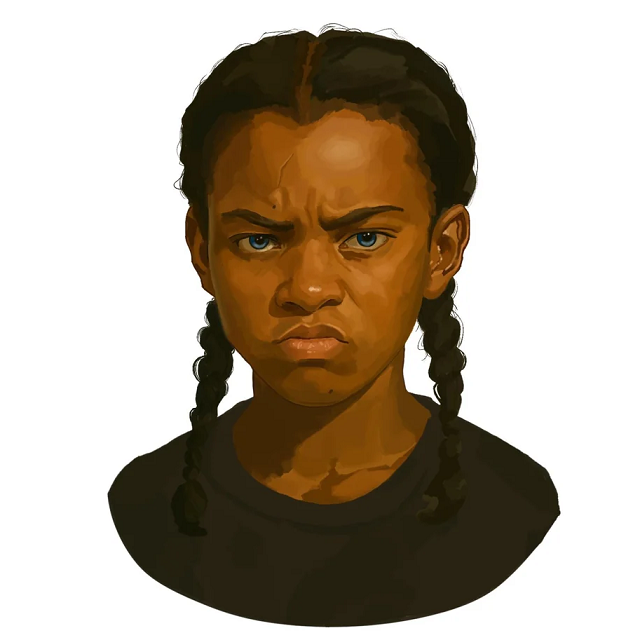

A Viadal előtt
Louella három házzal odébb lakott az Abernathy-éktól, fél tucat testvérével. Amikor
megszületett,
az apja elvitte a városba, és büszkén kitartotta egy iskola ablakából, hogy mindenkinek megmutassa. Ötéves
korában egy hétig szerelmes volt Haymitch Abernathyba, és mindenkinek azt mondta, hogy ő a „kedvese”, miután
viszont egy
másik fiútól kapott egy ökörbékát, ő lett Louella vonzalmának tárgya.
Portré

© u/IllegalSympathy, Reddit
Az Aratás
Louellát Maysilee Donner, Wyatt Callow és Haymitch Abernathy (miután Woodbine Chance elszökött) mellett
aratták
el. A 12. körzet négy kiválasztottja közül abban az évben ő volt az első, akit kiáltottak. Az Aratás után
Plutarch Heavensbee megkérte, hogy ő és Haymitch maradjanak otthon, hogy újra felvehesse családjaik
reakcióit az
aratásokra. A McCoy család nem volt hajlandó megadni Plutarchnak, amit akart, ezért elküldte Louellát, hogy
szálljon fel a vonatra.
Út a Kapitóliumba
Az Aratás után, úton a Kapitólium felé Louella azt mondta Haymitchnek, hogy nem igazságos, hogy Drusilla
Sickle
személyesen választotta ki őt. Azonnal megkérte, hogy legyen a szövetségese a Játékokon. Miután egy kísérő
étellel kínálta,
Louella nem volt hajlandó enni, és amikor megkérdezték, miért, zavarban volt, de mielőtt válaszolhatott
volna,
Maysilee követelte, hogy hozzanak evőeszközt és
tányérokat. Ezután azt tanácsolta Louellának, hogy ne hagyja, hogy állatként bánjanak vele.